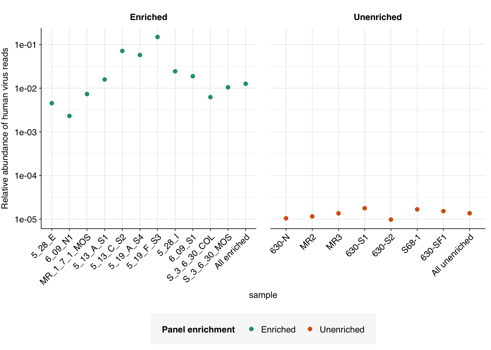

In my last entry, I documented my first attempt at analyzing the human-infecting-virus content of sequence data from Crits-Christoph et al. (2021). In this entry, I’ll attempt to address the issues that arose in that first analysis and analyze the resulting updated data.
As a reminder, I previously found that the analysis pipeline I developed for our BMC data led to numerous high-scoring false-positives when run on Crits-Christoph data:
In total, 992 non-viral read pairs and 83 read pairs of unclear status achieved high length-adjusted alignment scores (\(\geq 20\)) when mapped to viral Genbank with Bowtie2. For now, I will focus on the non-viral read pairs, and return to the unclear read pairs after these are in better shape.
Pass 1: excluding transgenic and bacterial sequences
The first major change I made to the pipeline was to curate the reference database for the Bowtie2 alignment to remove transgenic and other inappropriate viral sequences. To do this, I subset the collated FASTA file of viral genomes with seqtk to remove any sequence with “transgenic”, “mutant”, “recombinant”, “unverified” or “draft” in its sequence ID. This removed a total of 493 genomes from the reference DB, leaving a total of 41942 remaining for alignment with Bowtie2.
At the same time, I also added an E. coli genome to the set of contaminant genomes to screen against, joining cow, pig and human. I also moved the screening step to be downstream rather than upstream of the Bowtie2 filtering step, to save computation time and make it quicker to make further modifications downstream if needed. For now, I didn’t make any changes to the BBMap parameters for screening for contaminant genomes.
After passing putative viral read pairs through the same filtering steps as last time, I got the following result:
This is a clear improvement on the last round: the number of high-scoring non-viral sequences has fallen from 992 to 549, and the number of high-scoring unclear sequences from 83 to 56. The degree of improvement, however, is less than I’d hoped. Looking into the new alignments, this appears to be because many of the sequences mapping to the old transgenic sequences now map to non-transgenic (or at least, not labeled to be transgenic) strains of the same viruses. When BLASTed against nt, however, these sequences still map primarily to synthetic cloning vectors, suggesting these viral genomes may still be genetically modified despite not being labeled as such.
In my second attempt, I excluded further viral genomes (those with “recombinant” in the genome name) from the Bowtie database, and more importantly added several new sequences to the set of “contaminant” genomes to screen for during viral read identification. Specifically, I added one eukaryotic synthetic construct chromosome, three synthetic cloning vectors, and the Klebsiella pneumoniae genome, all of which came up during pass 1 as matches to false-positive viral sequences. Re-running the analysis with these changes, we see a large improvement:
Code
# Import and process new HV datahv_reads_newer_path<-file.path(data_dir_new, "hv_hits_putative_filtered_2.tsv.gz")hv_reads_newer<-read_tsv(hv_reads_newer_path, show_col_types =FALSE)%>%inner_join(libraries, by="sample")%>%arrange(enrichment, location, collection_date)%>%mutate(sample =fct_inorder(sample), adj_score_max =pmax(adj_score_fwd, adj_score_rev), contained =seq_id%in%mrg$seq_id)hv_reads_newer_unenriched<-filter(hv_reads_newer, enrichment=="Unenriched")mrg_newer<-hv_reads_newer_unenriched%>%left_join(mrg_old_join, by="seq_id")%>%mutate(cause =replace_na(cause, "NA"), viral_status_out =replace_na(viral_status_out, "UNCLEAR"), kraken_label =ifelse(assigned_hv, "Kraken2 HV\nassignment",ifelse(hit_hv, "Kraken2 HV\nhit","No hit or\nassignment")))# Make initial plotg_mrg_newer<-mrg_newer%>%ggplot(aes(x=adj_score_fwd, y=adj_score_rev, color=viral_status_out))+geom_point(alpha=0.5, shape=16)+scale_x_continuous(name="S(forward read)", limits=c(0,40), breaks=seq(0,100,10), expand =c(0,0))+scale_y_continuous(name="S(reverse read)", limits=c(0,40), breaks=seq(0,100,10), expand =c(0,0))+scale_color_brewer(palette ="Set1", name ="Viral status")+facet_wrap(~kraken_label, labeller =labeller(kit =label_wrap_gen(20)))+theme_base+theme(aspect.ratio=1)g_mrg_newer
The number of high-scoring false positives has been cut by over 400 (almost 75% compared to pass 1) and the optimal F1 score (excluding unclear read pairs for now) increased from 0.938 to 0.967. However, over 100 apparent false positives still remain, still primarily arising from cloning vectors and cow and pig sequences:
In my previous attempts at this problem, I mapped reads against “contaminant” genomes having first masked the latter to remove repetitive and low-entropy sequences. This makes sense in many contexts, but may not make sense here: in particular, if the repeat sequences being masked include virus-like transposable elements, this may be responsible for the failure of my current contaminant screening approach to detect and remove some of the non-viral (especially mammalian) sequences being mistaken for viruses by Bowtie2.
In addition to adding a further cloning vector sequence to the contaminant sequence database for this third pass, therefore, I also tried tried re-running my analysis pipeline against an unmasked version of this database. The results looked like this:
Code
# Import and process new HV datahv_reads_newest_path<-file.path(data_dir_new, "hv_hits_putative_filtered_3.tsv.gz")hv_reads_newest<-read_tsv(hv_reads_newest_path, show_col_types =FALSE)%>%inner_join(libraries, by="sample")%>%arrange(enrichment, location, collection_date)%>%mutate(sample =fct_inorder(sample), adj_score_max =pmax(adj_score_fwd, adj_score_rev), contained =seq_id%in%mrg$seq_id)hv_reads_newest_unenriched<-filter(hv_reads_newest, enrichment=="Unenriched")mrg_newest<-hv_reads_newest_unenriched%>%left_join(mrg_old_join, by="seq_id")%>%mutate(cause =replace_na(cause, "NA"), viral_status_out =replace_na(viral_status_out, "UNCLEAR"), kraken_label =ifelse(assigned_hv, "Kraken2 HV\nassignment",ifelse(hit_hv, "Kraken2 HV\nhit","No hit or\nassignment")))# Make initial plotg_mrg_newest<-mrg_newest%>%ggplot(aes(x=adj_score_fwd, y=adj_score_rev, color=viral_status_out))+geom_point(alpha=0.5, shape=16)+scale_x_continuous(name="S(forward read)", limits=c(0,40), breaks=seq(0,100,10), expand =c(0,0))+scale_y_continuous(name="S(reverse read)", limits=c(0,40), breaks=seq(0,100,10), expand =c(0,0))+scale_color_brewer(palette ="Set1", name ="Viral status")+facet_wrap(~kraken_label, labeller =labeller(kit =label_wrap_gen(20)))+theme_base+theme(aspect.ratio=1)g_mrg_newest
The number of high-scoring false positives has been cut by another 98, down to just 40, and the optimal F1 score (again excluding unclear read pairs for now) increased from to 0.98. Looking at the remaining false positives, it looks like this is entirely due to more successful removal of remaining cloning vector sequences; unmasking the cow and pig genomes seems to have had little effect:
While I would like to do better at removing these residual sequences, I think the F1 scores I’m getting are now high enough to consider this acceptable performance.
Turning now to the “unclear” sequences, we see that, unlike the false-positive sequences, these are not concentrated in a few specific culprits, but rather spread fairly evenly over numerous viruses (44 sequences across 34 genome IDs). Inspecting these manually with NCBI BLAST, we find that most, but not all, of them appear to be real matches:
The false matches don’t appear particularly differentiated from the true matches by alignment score, either using Bowtie2 (above) or BLAST (below):
Code
blast_results_seqid<-blast_results_highrank%>%separate(qseqid, c("sample", "seq_num", "read_pair"), "_")%>%mutate(seq_num =as.integer(seq_num), read_pair =as.integer(read_pair), sample=fct_inorder(sample))%>%left_join(mrg%>%select(sample, seq_num, seq_id, taxid_bowtie =taxid), by =c("sample", "seq_num"))blast_results_unclear<-blast_results_seqid%>%inner_join(mrg_newest_unclear%>%select(seq_id, viral_status, viral_status_out, cause), by ="seq_id")%>%filter(viral)# First check if any BLAST taxid is a descendent of the corresponding Bowtie taxid, or vice versataxid_dec_bowtie<-blast_results_unclear%>%pull(taxid_bowtie)%>%unique%>%as.numeric%>%lapply(expand_taxids, nodes=tax_nodes)%>%setNames(unique(blast_results_unclear$taxid_bowtie))taxid_dec_blast<-blast_results_unclear%>%pull(staxid)%>%unique%>%as.numeric%>%lapply(expand_taxids, nodes=tax_nodes)%>%setNames(unique(blast_results_unclear$staxid))match_1<-sapply(1:nrow(blast_results_unclear), function(n)as.numeric(blast_results_unclear$staxid[n])%in%taxid_dec_bowtie[[as.character(blast_results_unclear$taxid_bowtie[n])]])match_2<-sapply(1:nrow(blast_results_unclear), function(n)as.numeric(blast_results_unclear$taxid_bowtie[n])%in%taxid_dec_bowtie[[as.character(blast_results_unclear$staxid[n])]])match_any<-match_1|match_2blast_results_matched<-blast_results_unclear%>%mutate(taxid_match =match_any)
Overall, I think pulling these out for manual inspection is currently the right call. But if we’re forced to classify them automatically, counting them as true viral matches is probably the better bet.
Human viral reads in Crits-Christoph (2021): Final assessment
Now that I’ve settled on a pipeline and downstream analysis process I’m happy with, we can return to the question of overall human-viral abundance and composition in Crits-Christoph (2021). I’ll use a Bowtie2 alignment score cutoff of 20 here, as this is consistent with previous studies and gives good F1 scores in the tests above.
Using this cutoff, we find a total of 109868/8716917 human-viral reads in panel-enriched samples (\(1.26 \times 10^{-2}\) , about 1 in 80), and 4064/297690777 in unenriched samples (\(1.37 \times 10^{-5}\) , about 1 in 73,000). Unsurprisingly, enriched samples show much higher overall human-viral abundance than unenriched samples; however, even unenriched samples show much higher relative abundance than our previous BMC sludge sequences ( \(\sim 3 \times 10^{-7}\)):
Code
# Get raw read countsbasic_stats_path<-file.path(data_dir_old, "qc_basic_stats.tsv")basic_stats<-read_tsv(basic_stats_path, show_col_types =FALSE)read_counts_raw<-basic_stats%>%filter(stage=="raw_concat")%>%select(sample, n_reads_raw =n_read_pairs)# Get HV read countshv_reads_newest_cut<-hv_reads_newest%>%mutate(hv_status =assigned_hv|hit_hv|adj_score_max>=20)hv_reads_newest_counts<-hv_reads_newest_cut%>%group_by(sample, enrichment)%>%count(name="n_reads_hv")# Mergehv_reads_ra<-inner_join(hv_reads_newest_counts, read_counts_raw, by="sample")%>%mutate(p_reads_hv =n_reads_hv/n_reads_raw)hv_reads_total<-hv_reads_ra%>%group_by(enrichment)%>%summarize(n_reads_hv =sum(n_reads_hv), n_reads_raw =sum(n_reads_raw))%>%mutate(sample =paste("All", str_to_lower(enrichment)), p_reads_hv =n_reads_hv/n_reads_raw)hv_reads_bound<-bind_rows(hv_reads_ra, hv_reads_total)%>%arrange(enrichment)hv_reads_bound$sample<-fct_inorder(hv_reads_bound$sample)g_phv<-ggplot(hv_reads_bound, aes(x=sample, y=p_reads_hv, color=enrichment))+geom_point()+scale_y_log10("Relative abundance of human virus reads")+scale_color_brewer(palette="Dark2", name="Panel enrichment")+facet_wrap(~enrichment, scales ="free_x")+theme_base+theme(axis.text.x =element_text(angle=45, hjust=1))g_phv

In comparison, the old pipeline returns an estimated overall relative abundance of human-infecting viruses in unenriched samples of roughly \(3.1 \times 10^{-6}\), nearly 5 times lower.
Digging into individual viruses, we see large but inconsistent differences in relative abundance between enriched and unenriched samples:
Code
# Import viral generaviral_taxids_path<-file.path(data_dir_new, "viral-taxids.tsv")viral_taxids<-read_tsv(viral_taxids_path, show_col_types =FALSE)viral_genera<-viral_taxids%>%filter(rank=="genus")# Get unique name for each viral genusviral_genera_unique<-viral_genera%>%group_by(taxid)%>%filter(n()==1)viral_genera_duplicate<-viral_genera%>%group_by(taxid)%>%filter(n()>1)viral_genera_valid_1<-viral_genera_duplicate%>%filter(grepl("virus$", name))viral_genera_unique<-bind_rows(viral_genera_unique, viral_genera_valid_1%>%filter(n()==1))viral_genera_valid_2<-viral_genera_valid_1%>%filter(!taxid%in%viral_genera_unique$taxid)%>%filter(!grepl(" ", name))viral_genera_unique<-bind_rows(viral_genera_unique, viral_genera_valid_2%>%filter(n()==1))viral_genera_valid_3<-viral_genera_valid_2%>%filter(!taxid%in%viral_genera_unique$taxid)%>%filter(row_number()==1)viral_genera_unique<-bind_rows(viral_genera_unique, viral_genera_valid_3%>%filter(n()==1))viral_genera_valid_4<-viral_genera_duplicate%>%filter(!taxid%in%viral_genera_unique$taxid)%>%filter(row_number()==1)viral_genera_unique<-bind_rows(viral_genera_unique, viral_genera_valid_4%>%filter(n()==1))write_tsv(viral_genera_unique, file.path(data_dir_new, "viral-genera-unique.tsv"))# Discover viral genera for HV readshigh_ranks<-c("class", "family", "kingdom", "order", "phylum", "subfamily", "suborder", "subphylum", "superkingdom")hv_read_db<-hv_reads_newest_cuttax_nodes_cut<-rename(tax_nodes, taxid =child_taxid)%>%filter(taxid%in%v_taxids)hv_read_genus<-hv_read_db%>%inner_join(viral_genera_unique, by="taxid")hv_read_nogenus<-hv_read_db%>%filter(!taxid%in%viral_genera_unique$taxid)%>%inner_join(tax_nodes_cut, by="taxid")%>%mutate(taxid =parent_taxid)%>%filter(!is.na(taxid), !rank%in%high_ranks)#cat(nrow(hv_read_db), nrow(hv_read_genus), nrow(hv_read_nogenus), nrow(hv_read_genus)+nrow(hv_read_nogenus), "\n")while(nrow(hv_read_nogenus)>0){hv_read_genus<-bind_rows(hv_read_genus, hv_read_nogenus%>%inner_join(viral_genera_unique, by="taxid"))hv_read_nogenus<-hv_read_nogenus%>%filter(!taxid%in%viral_genera_unique$taxid)%>%select(-rank, -parent_taxid)%>%inner_join(tax_nodes_cut, by="taxid")%>%mutate(taxid =parent_taxid)%>%filter(!is.na(taxid), !rank%in%high_ranks)#cat(nrow(hv_read_db), nrow(hv_read_genus), nrow(hv_read_nogenus), nrow(hv_read_genus)+nrow(hv_read_nogenus), "\n")}# Get taxon names for higher-ranked assignmentssmatch<-hv_read_db$seq_id%in%hv_read_genus$seq_idhv_read_highrank<-hv_read_db[!smatch,]%>%inner_join(viral_taxids%>%group_by(taxid)%>%filter(row_number()==1), by ="taxid")# Count viral genera (& unassigned viruses)hv_counts_wide<-bind_rows(hv_read_genus, hv_read_highrank)%>%group_by(name, enrichment)%>%count%>%pivot_wider(id_cols ="name", names_from ="enrichment", values_from ="n", values_fill =0)hv_counts<-hv_counts_wide%>%pivot_longer(-name, names_to ="enrichment", values_to ="n_reads_virus")
As expected, viruses included in the respiratory virus panel see large increases in relative abundance in the enriched vs the unenriched samples, with the largest relative increases seen for Bocaparvovirus (Human bocavirus 1, 2c, 3), Betacoronavirus (SARS-CoV-2, OC43, HKU1), and Mastadenovirus (Human adenovirus B1, C2, E4). Confusingly, Orthopoxvirus, Cytomegalovirus and Gemygorvirus all also show substantially increased relative abundance, even though as far as I can tell there are no viruses from those genera in the Illumina panel. Numerous other viruses show weaker enrichment; even norovirus shows moderate (~4x) enrichment in the enriched vs the unenriched samples.
Conversely, a number of viruses are found in the unenriched samples that are absent in the enriched samples, including Rotavirus, Flavivirus, Parvovirus, and various papillomaviruses and polyomaviruses. One natural hypothesis for this is that these viruses were excluded by the enrichment panel and so had their relative abundance reduced; however, the enrichment observed for various other not-in-panel viruses calls this into question. An alternative hypothesis is that this difference is simply a consequence of the much deeper sequencing conducted on the unenriched samples (geometric mean of ~340k read pairs per enriched sample vs 42M read pairs per unenriched sample).
At this point, I’m satisfied with my workflow’s ability to produce usable results on the Crits-Christoph data. Next, I’ll apply this updated workflow to another previously-published WMGS dataset, likely Rothman et al. (2021).
Source Code
---title: "Workflow analysis of Crits-Christoph et al. (2021), part 3"subtitle: "Fixing the virus pipeline."author: "Will Bradshaw"date: 2024-02-13format: html: code-fold: true code-tools: true code-link: true df-print: pagededitor: visualtitle-block-banner: black---```{r}#| label: load-packages#| include: falselibrary(tidyverse)library(cowplot)library(patchwork)library(fastqcr)library(RColorBrewer)source("../scripts/aux_plot-theme.R")theme_base <- theme_base +theme(aspect.ratio =NULL)theme_kit <- theme_base +theme(axis.text.x =element_text(hjust =1, angle =45),axis.title.x =element_blank(),)tnl <-theme(legend.position ="none")```In my [last entry](https://data.securebio.org/wills-public-notebook/notebooks/2024-02-08_crits-christoph-2.html), I documented my first attempt at analyzing the human-infecting-virus content of sequence data from [Crits-Christoph et al. (2021)](https://doi.org/10.1128%2FmBio.02703-20). In this entry, I'll attempt to address the issues that arose in that first analysis and analyze the resulting updated data.As a reminder, I previously found that the analysis pipeline I developed for our BMC data led to numerous high-scoring false-positives when run on Crits-Christoph data:```{r}#| warning: false#| fig-width: 8# Data input pathsdata_dir_old <-"../data/2024-02-04_crits-christoph-2/"libraries_path <-file.path(data_dir_old, "cc-libraries.txt")hv_reads_filtered_path <-file.path(data_dir_old, "hv_hits_putative_filtered.tsv.gz")hv_taxids_path <-file.path(data_dir_old, "human-virus-taxids-all.txt")tax_nodes_path <-file.path(data_dir_old, "nodes.dmp.gz")blast_results_path <-file.path(data_dir_old, "cat-cc-unenriched.blast.gz")bg_causes <-read_tsv(file.path(data_dir_old, "cc-bad-notr.tsv"), show_col_types =FALSE)header_path <-file.path(data_dir_old, "human-viral-headers.txt")# Import datalibraries <-read_tsv(libraries_path, show_col_types =FALSE) %>%mutate(enrichment =str_to_title(enrichment))hv_reads_filtered <-read_tsv(hv_reads_filtered_path, show_col_types =FALSE) %>%inner_join(libraries, by="sample") %>%arrange(enrichment, location, collection_date) %>%mutate(sample =fct_inorder(sample))hv_taxids <-read_tsv(hv_taxids_path, show_col_types =FALSE, col_names ="taxid")tax_nodes <-read_delim(tax_nodes_path, delim ="\t|\t", show_col_types =FALSE, col_names =FALSE) %>%select(X1:X3) %>%rename(child_taxid = X1, parent_taxid = X2, rank = X3)# Define taxid search functionexpand_taxids <-function(taxids_in, nodes){ taxids_out <- taxids_in taxids_new <-filter(nodes, parent_taxid %in% taxids_out, !child_taxid %in% taxids_out) %>%pull(child_taxid) %>% sortwhile (length(taxids_new) >0){ taxids_out <-c(taxids_out, taxids_new) %>% sort taxids_new <-filter(nodes, parent_taxid %in% taxids_out, !child_taxid %in% taxids_out) %>%pull(child_taxid) %>% sort }return(taxids_out)}v_taxids <-expand_taxids(c(10239, hv_taxids$taxid), tax_nodes)# Import BLAST resultsblast_cols <-c("qseqid", "sseqid", "sgi", "staxid", "qlen", "evalue", "bitscore", "qcovs", "length", "pident", "mismatch", "gapopen", "sstrand", "qstart", "qend", "sstart", "send")blast_results <-read_tsv(blast_results_path, show_col_types =FALSE, col_names = blast_cols,col_types =cols(.default="c"))# Add viral statusblast_results_viral <-mutate(blast_results, viral = staxid %in% v_taxids)# Filter for the best hit for each sequence and taxidblast_results_best <- blast_results_viral %>%group_by(qseqid, staxid) %>%filter(bitscore ==max(bitscore)) %>%filter(length ==max(length)) %>%filter(row_number() ==1)# Rank hits for each sequenceblast_results_ranked <- blast_results_best %>%group_by(qseqid) %>%mutate(rank =dense_rank(desc(bitscore)))# Filter by rankblast_results_highrank <- blast_results_ranked %>%filter(rank <=5)# Summarize by read pair and taxidblast_results_paired <- blast_results_highrank %>%separate(qseqid, c("sample", "seq_num", "read_pair"), "_") %>%group_by(sample, seq_num, staxid, viral) %>%mutate(bitscore =as.numeric(bitscore), seq_num =as.numeric(seq_num)) %>%summarize(bitscore_max =max(bitscore), bitscore_min =min(bitscore), n_reads =n(), .groups ="drop") %>%mutate(viral_full = viral & n_reads ==2)# Process Bowtie/Kraken datamrg <- hv_reads_filtered %>%mutate(kraken_label =ifelse(assigned_hv, "Kraken2 HV\nassignment",ifelse(hit_hv, "Kraken2 HV\nhit","No hit or\nassignment"))) %>%group_by(sample) %>%arrange(desc(adj_score_fwd), desc(adj_score_rev)) %>%mutate(seq_num =row_number())# Compare BLAST results to Kraken & Bowtie assignmentsmrg_assign <- mrg %>%filter(enrichment =="Unenriched") %>%select(sample, seq_num, taxid, assigned_taxid, seq_id)blast_results_assign <-left_join(blast_results_paired, mrg_assign, by=c("sample", "seq_num")) %>%mutate(taxid_match_bowtie = (staxid == taxid),taxid_match_kraken = (staxid == assigned_taxid),taxid_match_any = taxid_match_bowtie | taxid_match_kraken)blast_results_out <- blast_results_assign %>%group_by(sample, seq_num, seq_id) %>%summarize(viral_status =ifelse(any(viral_full), 2,ifelse(any(taxid_match_any), 2,ifelse(any(viral), 1, 0))),.groups ="drop")# Merge with unenriched read datamrg_unenriched <- mrg %>%filter(enrichment =="Unenriched") %>%left_join(blast_results_out, by=c("sample", "seq_num", "seq_id")) %>%mutate(viral_status =replace_na(viral_status, 0))mrg_unenriched_plot <- mrg_unenriched %>%mutate(viral_status_out =ifelse(viral_status ==0, "FALSE",ifelse(viral_status ==1, "UNCLEAR", "TRUE")),viral_status_out =factor(viral_status_out, levels =c("FALSE", "UNCLEAR", "TRUE")))mrg_unenriched_debug <- mrg_unenriched_plot %>%mutate(adj_score_max =pmax(adj_score_fwd, adj_score_rev))mrg_unenriched_plot_2 <- mrg_unenriched_debug %>%left_join(bg_causes, by="genome_id") %>%mutate(cause =replace_na(cause, "NA"),viral_status =ifelse(cause =="Appears real", 2, ifelse(cause =="No match", pmax(1, viral_status), viral_status))) %>%mutate(viral_status_out =ifelse(viral_status ==0, "FALSE",ifelse(viral_status ==1, "UNCLEAR", "TRUE")),viral_status_out =factor(viral_status_out, levels =c("FALSE", "UNCLEAR", "TRUE")))# Plotg_mrg_v2 <- mrg_unenriched_plot_2 %>%ggplot(aes(x=adj_score_fwd, y=adj_score_rev, color=viral_status_out)) +geom_point(alpha=0.5, shape=16) +scale_x_continuous(name="S(forward read)", limits=c(0,40), breaks=seq(0,100,10), expand =c(0,0)) +scale_y_continuous(name="S(reverse read)", limits=c(0,40), breaks=seq(0,100,10), expand =c(0,0)) +scale_color_brewer(palette ="Set1", name ="Viral status") +facet_wrap(~kraken_label, labeller =labeller(kit =label_wrap_gen(20))) + theme_base +theme(aspect.ratio=1)g_mrg_v2```In total, 992 non-viral read pairs and 83 read pairs of unclear status achieved high length-adjusted alignment scores ($\geq 20$) when mapped to viral Genbank with Bowtie2. For now, I will focus on the non-viral read pairs, and return to the unclear read pairs after these are in better shape.# Pass 1: excluding transgenic and bacterial sequencesThe first major change I made to the pipeline was to curate the reference database for the Bowtie2 alignment to remove transgenic and other inappropriate viral sequences. To do this, I subset the collated FASTA file of viral genomes with seqtk to remove any sequence with "transgenic", "mutant", "recombinant", "unverified" or "draft" in its sequence ID. This removed a total of 493 genomes from the reference DB, leaving a total of 41942 remaining for alignment with Bowtie2.At the same time, I also added an *E. coli* genome to the set of contaminant genomes to screen against, joining cow, pig and human. I also moved the screening step to be downstream rather than upstream of the Bowtie2 filtering step, to save computation time and make it quicker to make further modifications downstream if needed. For now, I didn't make any changes to the BBMap parameters for screening for contaminant genomes.After passing putative viral read pairs through the same filtering steps as last time, I got the following result:```{r}#| fig-width: 8# Import and process new HV datadata_dir_new <-"../data/2024-02-13_crits-christoph-3/"hv_reads_new_path <-file.path(data_dir_new, "hv_hits_putative_filtered_1.tsv.gz")hv_reads_new <-read_tsv(hv_reads_new_path, show_col_types =FALSE) %>%inner_join(libraries, by="sample") %>%arrange(enrichment, location, collection_date) %>%mutate(sample =fct_inorder(sample),adj_score_max =pmax(adj_score_fwd, adj_score_rev),contained = seq_id %in% mrg$seq_id)hv_reads_new_unenriched <-filter(hv_reads_new, enrichment =="Unenriched")mrg_old_join <- mrg_unenriched_plot_2 %>% ungroup %>%select(seq_id, cause, viral_status, viral_status_out, genome_id_old=genome_id, taxid_old=taxid)mrg_new <- hv_reads_new_unenriched %>%left_join(mrg_old_join, by="seq_id") %>%mutate(cause =replace_na(cause, "NA"),viral_status_out =replace_na(viral_status_out, "UNCLEAR"),kraken_label =ifelse(assigned_hv, "Kraken2 HV\nassignment",ifelse(hit_hv, "Kraken2 HV\nhit","No hit or\nassignment")))# Make initial plotg_mrg_new <- mrg_new %>%ggplot(aes(x=adj_score_fwd, y=adj_score_rev, color=viral_status_out)) +geom_point(alpha=0.5, shape=16) +scale_x_continuous(name="S(forward read)", limits=c(0,40), breaks=seq(0,100,10), expand =c(0,0)) +scale_y_continuous(name="S(reverse read)", limits=c(0,40), breaks=seq(0,100,10), expand =c(0,0)) +scale_color_brewer(palette ="Set1", name ="Viral status") +facet_wrap(~kraken_label, labeller =labeller(kit =label_wrap_gen(20))) + theme_base +theme(aspect.ratio=1)g_mrg_new``````{r}mrg_hist_new <-bind_rows(mrg_new %>%mutate(attempt =1), mrg_unenriched_plot_2 %>%mutate(attempt =0)) %>%mutate(attempt =factor(attempt, levels=c(0,1))) g_hist_new <-ggplot(mrg_hist_new, aes(x=adj_score_max, fill=attempt, group=attempt)) +geom_histogram(binwidth=5,boundary=0,position="dodge") +facet_wrap(~viral_status_out) +scale_x_continuous(name ="Maximum adjusted alignment score") +scale_y_continuous(name="# Read pairs") +scale_fill_brewer(palette ="Dark2") + theme_baseg_hist_new```This is a clear improvement on the last round: the number of high-scoring non-viral sequences has fallen from 992 to 549, and the number of high-scoring unclear sequences from 83 to 56. The degree of improvement, however, is less than I'd hoped. Looking into the new alignments, this appears to be because many of the sequences mapping to the old transgenic sequences now map to non-transgenic (or at least, not labeled to be transgenic) strains of the same viruses. When BLASTed against nt, however, these sequences still map primarily to synthetic cloning vectors, suggesting these viral genomes may still be genetically modified despite not being labeled as such.```{r}header_db <-read_tsv(header_path, show_col_types =FALSE,col_names =c("genome_id", "genome_name"))mrg_unenriched_genomes <-full_join(mrg_new, header_db, by="genome_id")bad_genomes <- mrg_unenriched_genomes %>%filter(adj_score_max >=20) %>%group_by(genome_id, genome_name, viral_status_out) %>%count() %>%pivot_wider(names_from=viral_status_out, values_from=n, names_prefix ="n_") %>%filter(n_FALSE >0) %>%arrange(desc(n_FALSE)) %>%select(genome_id, genome_name, n_FALSE, n_TRUE, n_UNCLEAR) %>%mutate(n_TRUE =replace_na(n_TRUE, 0), n_UNCLEAR =replace_na(n_UNCLEAR, 0)) %>%mutate(p_FALSE = n_FALSE/(n_FALSE+n_TRUE+n_UNCLEAR))bad_genomes``````{r}mrg_unenriched_fasta <- mrg_new %>%filter(adj_score_max >=20, viral_status_out =="FALSE") %>%group_by(genome_id) %>%mutate(nseq =n()) %>%arrange(desc(nseq), desc(adj_score_max)) %>%filter(row_number() <=10) %>%mutate(seq_num_gid =row_number(), seq_head =paste0(">", genome_id, "_", seq_num_gid)) %>% ungroup %>%select(header1=seq_head, seq1=query_seq_fwd, header2=seq_head, seq2=query_seq_rev) %>%mutate(header1=paste0(header1, "_1"), header2=paste0(header2, "_2"))mu_fasta_out <-do.call(paste, c(mrg_unenriched_fasta, sep="\n")) %>%paste(collapse="\n")write(mu_fasta_out, file.path(data_dir_new, "cc-bad-gid.fasta"))bad_genomes_out <- bad_genomes %>%left_join(mrg_new %>%filter(adj_score_max >=20, viral_status_out =="FALSE") %>%group_by(genome_id, cause) %>%summarize(.groups="drop"), by="genome_id")```# Pass 2: Additional "contaminant" screeningIn my second attempt, I excluded further viral genomes (those with "recombinant" in the genome name) from the Bowtie database, and more importantly added several new sequences to the set of "contaminant" genomes to screen for during viral read identification. Specifically, I added one eukaryotic synthetic construct chromosome, three synthetic cloning vectors, and the *Klebsiella pneumoniae* genome, all of which came up during pass 1 as matches to false-positive viral sequences. Re-running the analysis with these changes, we see a large improvement:```{r}#| fig-width: 8# Import and process new HV datahv_reads_newer_path <-file.path(data_dir_new, "hv_hits_putative_filtered_2.tsv.gz")hv_reads_newer <-read_tsv(hv_reads_newer_path, show_col_types =FALSE) %>%inner_join(libraries, by="sample") %>%arrange(enrichment, location, collection_date) %>%mutate(sample =fct_inorder(sample),adj_score_max =pmax(adj_score_fwd, adj_score_rev),contained = seq_id %in% mrg$seq_id)hv_reads_newer_unenriched <-filter(hv_reads_newer, enrichment =="Unenriched")mrg_newer <- hv_reads_newer_unenriched %>%left_join(mrg_old_join, by="seq_id") %>%mutate(cause =replace_na(cause, "NA"),viral_status_out =replace_na(viral_status_out, "UNCLEAR"),kraken_label =ifelse(assigned_hv, "Kraken2 HV\nassignment",ifelse(hit_hv, "Kraken2 HV\nhit","No hit or\nassignment")))# Make initial plotg_mrg_newer <- mrg_newer %>%ggplot(aes(x=adj_score_fwd, y=adj_score_rev, color=viral_status_out)) +geom_point(alpha=0.5, shape=16) +scale_x_continuous(name="S(forward read)", limits=c(0,40), breaks=seq(0,100,10), expand =c(0,0)) +scale_y_continuous(name="S(reverse read)", limits=c(0,40), breaks=seq(0,100,10), expand =c(0,0)) +scale_color_brewer(palette ="Set1", name ="Viral status") +facet_wrap(~kraken_label, labeller =labeller(kit =label_wrap_gen(20))) + theme_base +theme(aspect.ratio=1)g_mrg_newer``````{r}mrg_hist_newer <-bind_rows(mrg_new %>%mutate(attempt =1), mrg_unenriched_plot_2 %>%mutate(attempt =0), mrg_newer %>%mutate(attempt=2)) %>%mutate(attempt =factor(attempt, levels=c(0,1,2))) g_hist_newer <-ggplot(mrg_hist_newer, aes(x=adj_score_max, fill=attempt, group=attempt)) +geom_histogram(binwidth=5,boundary=0,position="dodge") +facet_wrap(~viral_status_out) +scale_x_continuous(name ="Maximum adjusted alignment score") +scale_y_continuous(name="# Read pairs") +scale_fill_brewer(palette ="Dark2") + theme_baseg_hist_newer``````{r}counts_newer <- mrg_hist_newer %>%filter(adj_score_max >=20) %>%group_by(viral_status_out, attempt) %>% count %>% ungroupnames(counts_newer) <-c("Viral Status", "Attempt", "High-Scoring Read Pairs")counts_newer``````{r}test_sens_spec <-function(tab, score_threshold, conjunctive, include_special){if (!include_special) tab <-filter(tab, viral_status_out %in%c("TRUE", "FALSE")) tab_retained <- tab %>%mutate(conjunctive = conjunctive,retain_score_conjunctive = (adj_score_fwd > score_threshold & adj_score_rev > score_threshold), retain_score_disjunctive = (adj_score_fwd > score_threshold | adj_score_rev > score_threshold),retain_score =ifelse(conjunctive, retain_score_conjunctive, retain_score_disjunctive),retain = assigned_hv | hit_hv | retain_score) %>%group_by(viral_status_out, retain) %>% count pos_tru <- tab_retained %>%filter(viral_status_out =="TRUE", retain) %>%pull(n) %>% sum pos_fls <- tab_retained %>%filter(viral_status_out !="TRUE", retain) %>%pull(n) %>% sum neg_tru <- tab_retained %>%filter(viral_status_out !="TRUE", !retain) %>%pull(n) %>% sum neg_fls <- tab_retained %>%filter(viral_status_out =="TRUE", !retain) %>%pull(n) %>% sum sensitivity <- pos_tru / (pos_tru + neg_fls) specificity <- neg_tru / (neg_tru + pos_fls) precision <- pos_tru / (pos_tru + pos_fls) f1 <-2* precision * sensitivity / (precision + sensitivity) out <-tibble(threshold=score_threshold, include_special = include_special, conjunctive = conjunctive, sensitivity=sensitivity, specificity=specificity, precision=precision, f1=f1)return(out)}range_f1 <-function(intab, inc_special, inrange=15:45){ tss <- purrr::partial(test_sens_spec, tab=intab, include_special=inc_special) stats_conj <-lapply(inrange, tss, conjunctive=TRUE) %>% bind_rows stats_disj <-lapply(inrange, tss, conjunctive=FALSE) %>% bind_rows stats_all <-bind_rows(stats_conj, stats_disj) %>%pivot_longer(!(threshold:conjunctive), names_to="metric", values_to="value") %>%mutate(conj_label =ifelse(conjunctive, "Conjunctive", "Disjunctive"))return(stats_all)}inc_special <-FALSEstats_old <-range_f1(mrg_unenriched_plot_2, inc_special) %>%mutate(attempt=0)stats_new <-range_f1(mrg_new, inc_special) %>%mutate(attempt=1)stats_newer <-range_f1(mrg_newer, inc_special) %>%mutate(attempt=2)stats_all <-bind_rows(stats_old, stats_new, stats_newer) %>%mutate(attempt =as.factor(attempt))threshold_opt <- stats_all %>%group_by(conj_label,attempt) %>%filter(metric =="f1") %>%filter(value ==max(value)) %>%filter(threshold ==min(threshold))g_stats_2 <-ggplot(stats_all %>%filter(metric =="f1"),aes(x=threshold, y=value, color=attempt)) +geom_line() +scale_y_continuous(name ="Value", limits=c(0,1), breaks =seq(0,1,0.2), expand =c(0,0)) +scale_x_continuous(name ="Threshold", expand =c(0,0)) +scale_color_brewer(palette="Set1")+facet_wrap(~conj_label) + theme_baseg_stats_2```The number of high-scoring false positives has been cut by over 400 (almost 75% compared to pass 1) and the optimal F1 score (excluding unclear read pairs for now) increased from 0.938 to 0.967. However, over 100 apparent false positives still remain, still primarily arising from cloning vectors and cow and pig sequences:```{r}mrg_ug_newer <-left_join(mrg_newer, header_db, by="genome_id")bad_genomes_newer <- mrg_ug_newer %>%filter(adj_score_max >=20) %>%group_by(genome_id, genome_name, viral_status_out) %>%count() %>%pivot_wider(names_from=viral_status_out, values_from=n, names_prefix ="n_") %>%filter(n_FALSE >0) %>%arrange(desc(n_FALSE)) %>%select(genome_id, genome_name, n_FALSE, n_TRUE, n_UNCLEAR) %>%mutate(n_TRUE =replace_na(n_TRUE, 0), n_UNCLEAR =replace_na(n_UNCLEAR, 0)) %>%mutate(p_FALSE = n_FALSE/(n_FALSE+n_TRUE+n_UNCLEAR))bad_genomes_newer_caused <-left_join(bad_genomes_newer, bg_causes %>%select(genome_id, cause),by="genome_id")bad_genomes_newer_caused``````{r}mrg_unenriched_fasta_2 <- mrg_newer %>%filter(adj_score_max >=20, viral_status_out =="FALSE") %>%group_by(genome_id) %>%mutate(nseq =n()) %>%arrange(desc(nseq), desc(adj_score_max)) %>%filter(row_number() <=10) %>%mutate(seq_num_gid =row_number(), seq_head =paste0(">", genome_id, "_", seq_num_gid)) %>% ungroup %>%select(header1=seq_head, seq1=query_seq_fwd, header2=seq_head, seq2=query_seq_rev) %>%mutate(header1=paste0(header1, "_1"), header2=paste0(header2, "_2"))mu_fasta_out_2 <-do.call(paste, c(mrg_unenriched_fasta_2, sep="\n")) %>%paste(collapse="\n")write(mu_fasta_out_2, file.path(data_dir_new, "cc-bad-gid-2.fasta"))```# Pass 3: Unmasking "contaminant" genomesIn my previous attempts at this problem, I mapped reads against "contaminant" genomes having first masked the latter to remove repetitive and low-entropy sequences. This makes sense in many contexts, but may not make sense here: in particular, if the repeat sequences being masked include virus-like transposable elements, this may be responsible for the failure of my current contaminant screening approach to detect and remove some of the non-viral (especially mammalian) sequences being mistaken for viruses by Bowtie2.In addition to adding a further cloning vector sequence to the contaminant sequence database for this third pass, therefore, I also tried tried re-running my analysis pipeline against an unmasked version of this database. The results looked like this:```{r}#| fig-width: 8# Import and process new HV datahv_reads_newest_path <-file.path(data_dir_new, "hv_hits_putative_filtered_3.tsv.gz")hv_reads_newest <-read_tsv(hv_reads_newest_path, show_col_types =FALSE) %>%inner_join(libraries, by="sample") %>%arrange(enrichment, location, collection_date) %>%mutate(sample =fct_inorder(sample),adj_score_max =pmax(adj_score_fwd, adj_score_rev),contained = seq_id %in% mrg$seq_id)hv_reads_newest_unenriched <-filter(hv_reads_newest, enrichment =="Unenriched")mrg_newest <- hv_reads_newest_unenriched %>%left_join(mrg_old_join, by="seq_id") %>%mutate(cause =replace_na(cause, "NA"),viral_status_out =replace_na(viral_status_out, "UNCLEAR"),kraken_label =ifelse(assigned_hv, "Kraken2 HV\nassignment",ifelse(hit_hv, "Kraken2 HV\nhit","No hit or\nassignment")))# Make initial plotg_mrg_newest <- mrg_newest %>%ggplot(aes(x=adj_score_fwd, y=adj_score_rev, color=viral_status_out)) +geom_point(alpha=0.5, shape=16) +scale_x_continuous(name="S(forward read)", limits=c(0,40), breaks=seq(0,100,10), expand =c(0,0)) +scale_y_continuous(name="S(reverse read)", limits=c(0,40), breaks=seq(0,100,10), expand =c(0,0)) +scale_color_brewer(palette ="Set1", name ="Viral status") +facet_wrap(~kraken_label, labeller =labeller(kit =label_wrap_gen(20))) + theme_base +theme(aspect.ratio=1)g_mrg_newest``````{r}mrg_hist_newest <-bind_rows(mrg_new %>%mutate(attempt =1), mrg_unenriched_plot_2 %>%mutate(attempt =0), mrg_newer %>%mutate(attempt=2), mrg_newest %>%mutate(attempt=3)) %>%mutate(attempt =factor(attempt, levels=c(0,1,2,3))) g_hist_newest <-ggplot(mrg_hist_newest, aes(x=adj_score_max, fill=attempt, group=attempt)) +geom_histogram(binwidth=5,boundary=0,position="dodge") +facet_wrap(~viral_status_out) +scale_x_continuous(name ="Maximum adjusted alignment score") +scale_y_continuous(name="# Read pairs") +scale_fill_brewer(palette ="Dark2") + theme_base +geom_vline(xintercept=20, linetype="dashed", color="red")g_hist_newest``````{r}counts_newest <- mrg_hist_newest %>%filter(adj_score_max >=20) %>%group_by(viral_status_out, attempt) %>% count %>% ungroupnames(counts_newest) <-c("Viral Status", "Attempt", "High-Scoring Read Pairs")counts_newest``````{r}stats_newest <-range_f1(mrg_newest, inc_special) %>%mutate(attempt=3)stats_all_3 <-bind_rows(stats_old, stats_new, stats_newer, stats_newest) %>%mutate(attempt =as.factor(attempt))threshold_opt_3 <- stats_all_3 %>%group_by(conj_label,attempt) %>%filter(metric =="f1") %>%filter(value ==max(value)) %>%filter(threshold ==min(threshold))g_stats_3 <-ggplot(stats_all_3 %>%filter(metric =="f1"),aes(x=threshold, y=value, color=attempt)) +geom_line() +scale_y_continuous(name ="Value", limits=c(0,1), breaks =seq(0,1,0.2), expand =c(0,0)) +scale_x_continuous(name ="Threshold", expand =c(0,0)) +scale_color_brewer(palette="Set1")+facet_wrap(~conj_label) + theme_baseg_stats_3```The number of high-scoring false positives has been cut by another 98, down to just 40, and the optimal F1 score (again excluding unclear read pairs for now) increased from to 0.98. Looking at the remaining false positives, it looks like this is entirely due to more successful removal of remaining cloning vector sequences; unmasking the cow and pig genomes seems to have had little effect:```{r}mrg_ug_newest <-left_join(mrg_newest, header_db, by="genome_id")bad_genomes_newest <- mrg_ug_newest %>%filter(adj_score_max >=20) %>%group_by(genome_id, genome_name, viral_status_out) %>%count() %>%pivot_wider(names_from=viral_status_out, values_from=n, names_prefix ="n_") %>%filter(n_FALSE >0) %>%arrange(desc(n_FALSE)) %>%select(genome_id, genome_name, n_FALSE, n_TRUE, n_UNCLEAR) %>%mutate(n_TRUE =replace_na(n_TRUE, 0), n_UNCLEAR =replace_na(n_UNCLEAR, 0)) %>%mutate(p_FALSE = n_FALSE/(n_FALSE+n_TRUE+n_UNCLEAR))bad_genomes_newest_caused <-left_join(bad_genomes_newest, bg_causes %>%select(genome_id, cause),by="genome_id")bad_genomes_newest_caused```While I would like to do better at removing these residual sequences, I think the F1 scores I'm getting are now high enough to consider this acceptable performance.Turning now to the "unclear" sequences, we see that, unlike the false-positive sequences, these are not concentrated in a few specific culprits, but rather spread fairly evenly over numerous viruses (44 sequences across 34 genome IDs). Inspecting these manually with NCBI BLAST, we find that most, but not all, of them appear to be real matches:```{r}unclear_genomes_newest <- mrg_ug_newest %>%filter(adj_score_max >=20) %>%group_by(genome_id, genome_name, viral_status_out) %>%count() %>%pivot_wider(names_from=viral_status_out, values_from=n, names_prefix ="n_") %>%filter(n_UNCLEAR >0) %>%arrange(desc(n_UNCLEAR)) %>%select(genome_id, genome_name, n_UNCLEAR, n_FALSE, n_TRUE) %>%mutate(n_TRUE =replace_na(n_TRUE, 0), n_FALSE =replace_na(n_FALSE, 0)) %>%mutate(p_UNCLEAR = n_UNCLEAR/(n_FALSE+n_TRUE+n_UNCLEAR))unclear_genomes_newestwrite_tsv(unclear_genomes_newest, file.path(data_dir_new, "gid-unclear-3-raw.tsv"))mrg_unenriched_fasta_3 <- mrg_newer %>%filter(adj_score_max >=20, viral_status_out =="UNCLEAR") %>%group_by(genome_id) %>%mutate(nseq =n()) %>%arrange(desc(nseq), desc(adj_score_max)) %>%filter(row_number() <=10) %>%mutate(seq_num_gid =row_number(), seq_head =paste0(">", genome_id, "_", seq_num_gid)) %>% ungroup %>%select(header1=seq_head, seq1=query_seq_fwd, header2=seq_head, seq2=query_seq_rev) %>%mutate(header1=paste0(header1, "_1"), header2=paste0(header2, "_2"))mu_fasta_out_3 <-do.call(paste, c(mrg_unenriched_fasta_3, sep="\n")) %>%paste(collapse="\n")write(mu_fasta_out_3, file.path(data_dir_new, "cc-unclear-gid-3.fasta"))``````{r}unclear_genomes_caused <-read_tsv(file.path(data_dir_new, "gid-unclear-3.tsv"), show_col_types =FALSE)mrg_newest_unclear <- mrg_ug_newest %>%select(-cause) %>%filter(adj_score_max >=20, viral_status_out =="UNCLEAR") %>%left_join(unclear_genomes_caused %>%select(genome_id, cause), by="genome_id") %>%mutate(cause =replace_na(cause, "NA"),viral_status =ifelse(cause =="Appears real", 2, ifelse(cause =="No match", pmax(1, viral_status), viral_status))) %>%mutate(viral_status_out =ifelse(viral_status ==0, "FALSE",ifelse(viral_status ==1, "UNCLEAR", "TRUE")),viral_status_out =factor(viral_status_out, levels =c("FALSE", "UNCLEAR", "TRUE")))mrg_newest_unclear %>%group_by(cause) %>% count``````{r}g_unclear <- mrg_newest_unclear %>%ggplot(aes(x=adj_score_fwd, y=adj_score_rev, color=viral_status_out)) +geom_point(alpha=0.5, shape=16) +scale_x_continuous(name="S(forward read)", limits=c(0,40), breaks=seq(0,100,10), expand =c(0,0)) +scale_y_continuous(name="S(reverse read)", limits=c(0,40), breaks=seq(0,100,10), expand =c(0,0)) +scale_color_brewer(palette ="Set1", name ="Viral status") + theme_base +theme(aspect.ratio=1)g_unclear```The false matches don't appear particularly differentiated from the true matches by alignment score, either using Bowtie2 (above) or BLAST (below):```{r}blast_results_seqid <- blast_results_highrank %>%separate(qseqid, c("sample", "seq_num", "read_pair"), "_") %>%mutate(seq_num =as.integer(seq_num), read_pair =as.integer(read_pair), sample=fct_inorder(sample)) %>%left_join(mrg %>%select(sample, seq_num, seq_id, taxid_bowtie = taxid), by =c("sample", "seq_num")) blast_results_unclear <- blast_results_seqid %>%inner_join(mrg_newest_unclear %>%select(seq_id, viral_status, viral_status_out, cause), by ="seq_id") %>%filter(viral)# First check if any BLAST taxid is a descendent of the corresponding Bowtie taxid, or vice versataxid_dec_bowtie <- blast_results_unclear %>%pull(taxid_bowtie) %>% unique %>% as.numeric %>%lapply(expand_taxids, nodes=tax_nodes) %>%setNames(unique(blast_results_unclear$taxid_bowtie))taxid_dec_blast <- blast_results_unclear %>%pull(staxid) %>% unique %>% as.numeric %>%lapply(expand_taxids, nodes=tax_nodes) %>%setNames(unique(blast_results_unclear$staxid))match_1 <-sapply(1:nrow(blast_results_unclear), function(n) as.numeric(blast_results_unclear$staxid[n]) %in% taxid_dec_bowtie[[as.character(blast_results_unclear$taxid_bowtie[n])]])match_2 <-sapply(1:nrow(blast_results_unclear), function(n) as.numeric(blast_results_unclear$taxid_bowtie[n]) %in% taxid_dec_bowtie[[as.character(blast_results_unclear$staxid[n])]])match_any <- match_1 | match_2blast_results_matched <- blast_results_unclear %>%mutate(taxid_match = match_any)``````{r}#| message: false# Otherwise, take the highest-scoring, longest viral matchblast_results_single <- blast_results_matched %>%group_by(sample, seq_num, read_pair) %>%mutate(bitscore =as.numeric(bitscore), length =as.numeric(length)) %>%filter(taxid_match ==max(taxid_match)) %>%filter(bitscore ==max(bitscore)) %>%filter(length ==max(length)) %>%filter(row_number() ==1)brs_out <- blast_results_single %>%select(sample, seq_num, bitscore, viral_status_out) %>%pivot_wider(id_cols =c("sample", "seq_num", "viral_status_out"), names_from ="read_pair", values_from ="bitscore", names_prefix ="read_") %>%mutate(read_1 =replace_na(read_1, 0), read_2 =replace_na(read_2, 0))g_brs <-ggplot(brs_out, aes(x=read_1, y=read_2, color = viral_status_out)) +geom_point(alpha=0.5, shape=16, size=3) +scale_x_continuous(name="Best viral bitscore (forward read)", limits=c(0,160), breaks=seq(0,160,40), expand =c(0,0)) +scale_y_continuous(name="Best viral bitscore (reverse read)", limits=c(0,160), breaks=seq(0,160,40), expand =c(0,0)) +scale_color_brewer(palette ="Set1", name ="Viral status") + theme_base +theme(aspect.ratio=1)g_brs```Overall, I think pulling these out for manual inspection is currently the right call. But if we're forced to classify them automatically, counting them as true viral matches is probably the better bet.# Human viral reads in Crits-Christoph (2021): Final assessmentNow that I've settled on a pipeline and downstream analysis process I'm happy with, we can return to the question of overall human-viral abundance and composition in Crits-Christoph (2021). I'll use a Bowtie2 alignment score cutoff of 20 here, as this is consistent with previous studies and gives good F1 scores in the tests above.Using this cutoff, we find a total of 109868/8716917 human-viral reads in panel-enriched samples ($1.26 \times 10^{-2}$ , about 1 in 80), and 4064/297690777 in unenriched samples ($1.37 \times 10^{-5}$ , about 1 in 73,000). Unsurprisingly, enriched samples show much higher overall human-viral abundance than unenriched samples; however, even unenriched samples show much higher relative abundance than [our previous BMC sludge sequences](https://data.securebio.org/wills-public-notebook/notebooks/2023-12-19_project-runway-bmc-rna.html) ( $\sim 3 \times 10^{-7}$):```{r}# Get raw read countsbasic_stats_path <-file.path(data_dir_old, "qc_basic_stats.tsv")basic_stats <-read_tsv(basic_stats_path, show_col_types =FALSE)read_counts_raw <- basic_stats %>%filter(stage =="raw_concat") %>%select(sample, n_reads_raw = n_read_pairs)# Get HV read countshv_reads_newest_cut <- hv_reads_newest %>%mutate(hv_status = assigned_hv | hit_hv | adj_score_max >=20)hv_reads_newest_counts <- hv_reads_newest_cut %>%group_by(sample, enrichment) %>%count(name="n_reads_hv")# Mergehv_reads_ra <-inner_join(hv_reads_newest_counts, read_counts_raw, by="sample") %>%mutate(p_reads_hv = n_reads_hv/n_reads_raw)hv_reads_total <- hv_reads_ra %>%group_by(enrichment) %>%summarize(n_reads_hv =sum(n_reads_hv), n_reads_raw =sum(n_reads_raw)) %>%mutate(sample =paste("All", str_to_lower(enrichment)), p_reads_hv = n_reads_hv/n_reads_raw)hv_reads_bound <-bind_rows(hv_reads_ra, hv_reads_total) %>%arrange(enrichment)hv_reads_bound$sample <-fct_inorder(hv_reads_bound$sample)g_phv <-ggplot(hv_reads_bound, aes(x=sample, y=p_reads_hv, color=enrichment)) +geom_point() +scale_y_log10("Relative abundance of human virus reads") +scale_color_brewer(palette="Dark2", name="Panel enrichment") +facet_wrap(~enrichment, scales ="free_x") + theme_base +theme(axis.text.x =element_text(angle=45, hjust=1))g_phv```In comparison, the old pipeline returns an estimated overall relative abundance of human-infecting viruses in unenriched samples of roughly $3.1 \times 10^{-6}$, nearly 5 times lower.Digging into individual viruses, we see large but inconsistent differences in relative abundance between enriched and unenriched samples:```{r}#| warning: false# Import viral generaviral_taxids_path <-file.path(data_dir_new, "viral-taxids.tsv")viral_taxids <-read_tsv(viral_taxids_path, show_col_types =FALSE)viral_genera <- viral_taxids %>%filter(rank =="genus")# Get unique name for each viral genusviral_genera_unique <- viral_genera %>%group_by(taxid) %>%filter(n() ==1)viral_genera_duplicate <- viral_genera %>%group_by(taxid) %>%filter(n() >1)viral_genera_valid_1 <- viral_genera_duplicate %>%filter(grepl("virus$", name))viral_genera_unique <-bind_rows(viral_genera_unique, viral_genera_valid_1 %>%filter(n() ==1))viral_genera_valid_2 <- viral_genera_valid_1 %>%filter(! taxid %in% viral_genera_unique$taxid) %>%filter(!grepl(" ", name))viral_genera_unique <-bind_rows(viral_genera_unique, viral_genera_valid_2 %>%filter(n() ==1))viral_genera_valid_3 <- viral_genera_valid_2 %>%filter(! taxid %in% viral_genera_unique$taxid) %>%filter(row_number() ==1)viral_genera_unique <-bind_rows(viral_genera_unique, viral_genera_valid_3 %>%filter(n() ==1))viral_genera_valid_4 <- viral_genera_duplicate %>%filter(! taxid %in% viral_genera_unique$taxid) %>%filter(row_number() ==1)viral_genera_unique <-bind_rows(viral_genera_unique, viral_genera_valid_4 %>%filter(n() ==1))write_tsv(viral_genera_unique, file.path(data_dir_new, "viral-genera-unique.tsv"))# Discover viral genera for HV readshigh_ranks <-c("class", "family", "kingdom", "order", "phylum", "subfamily", "suborder", "subphylum", "superkingdom")hv_read_db <- hv_reads_newest_cuttax_nodes_cut <-rename(tax_nodes, taxid = child_taxid) %>%filter(taxid %in% v_taxids)hv_read_genus <- hv_read_db %>%inner_join(viral_genera_unique, by="taxid")hv_read_nogenus <- hv_read_db %>%filter(!taxid %in% viral_genera_unique$taxid) %>%inner_join(tax_nodes_cut, by="taxid") %>%mutate(taxid = parent_taxid) %>%filter(!is.na(taxid), !rank %in% high_ranks)#cat(nrow(hv_read_db), nrow(hv_read_genus), nrow(hv_read_nogenus), nrow(hv_read_genus)+nrow(hv_read_nogenus), "\n")while(nrow(hv_read_nogenus) >0){ hv_read_genus <-bind_rows(hv_read_genus, hv_read_nogenus %>%inner_join(viral_genera_unique, by="taxid")) hv_read_nogenus <- hv_read_nogenus %>%filter(!taxid %in% viral_genera_unique$taxid) %>%select(-rank, -parent_taxid) %>%inner_join(tax_nodes_cut, by="taxid") %>%mutate(taxid = parent_taxid) %>%filter(!is.na(taxid), !rank %in% high_ranks)#cat(nrow(hv_read_db), nrow(hv_read_genus), nrow(hv_read_nogenus), nrow(hv_read_genus)+nrow(hv_read_nogenus), "\n")}# Get taxon names for higher-ranked assignmentssmatch <- hv_read_db$seq_id %in% hv_read_genus$seq_idhv_read_highrank <- hv_read_db[!smatch,] %>%inner_join(viral_taxids %>%group_by(taxid) %>%filter(row_number() ==1), by ="taxid")# Count viral genera (& unassigned viruses)hv_counts_wide <-bind_rows(hv_read_genus, hv_read_highrank) %>%group_by(name, enrichment) %>% count %>%pivot_wider(id_cols ="name", names_from ="enrichment", values_from ="n", values_fill =0) hv_counts <- hv_counts_wide %>%pivot_longer(-name, names_to ="enrichment", values_to ="n_reads_virus")``````{r}#| warning: falsehv_counts_fraction <- hv_counts %>%inner_join(hv_reads_total %>%select(enrichment, n_reads_hv, n_reads_raw), by="enrichment") %>%mutate(p_reads_virus_all = n_reads_virus/n_reads_raw, p_reads_virus_hv = n_reads_virus/n_reads_hv)g_hv_counts <-ggplot(hv_counts_fraction, aes(x=name, y=p_reads_virus_all, color=enrichment)) +geom_point(shape=16) +scale_y_log10(name ="Relative abundance") +scale_color_brewer(palette="Dark2", name="Panel enrichment") + theme_base +theme(axis.text.x =element_text(angle=45, hjust=1), aspect.ratio =1/5)g_hv_counts```As expected, viruses included in the respiratory virus panel see large increases in relative abundance in the enriched vs the unenriched samples, with the largest relative increases seen for *Bocaparvovirus* (Human bocavirus 1, 2c, 3), *Betacoronavirus* (SARS-CoV-2, OC43, HKU1), and *Mastadenovirus* (Human adenovirus B1, C2, E4). Confusingly, Orthopoxvirus, Cytomegalovirus and Gemygorvirus all also show substantially increased relative abundance, even though as far as I can tell there are no viruses from those genera in the [Illumina panel](https://www.illumina.com/ko-kr/products/by-type/sequencing-kits/library-prep-kits/respiratory-virus-oligo-panel.html). Numerous other viruses show weaker enrichment; even norovirus shows moderate (\~4x) enrichment in the enriched vs the unenriched samples.Conversely, a number of viruses are found in the unenriched samples that are absent in the enriched samples, including *Rotavirus*, *Flavivirus*, *Parvovirus*, and various papillomaviruses and polyomaviruses. One natural hypothesis for this is that these viruses were excluded by the enrichment panel and so had their relative abundance reduced; however, the enrichment observed for various other not-in-panel viruses calls this into question. An alternative hypothesis is that this difference is simply a consequence of the much deeper sequencing conducted on the unenriched samples (geometric mean of \~340k read pairs per enriched sample vs 42M read pairs per unenriched sample).```{r}hv_ra_wide <- hv_counts_fraction %>%select(name, enrichment, p_reads_virus_all) %>%pivot_wider(id_cols ="name", names_from ="enrichment", values_from ="p_reads_virus_all", values_fill =0) %>%rename(ra_enriched = Enriched, ra_unenriched = Unenriched) %>%mutate(relative_enrichment =log10(ra_enriched/ra_unenriched)) %>%arrange(desc(relative_enrichment), desc(ra_enriched), ra_unenriched)hv_ra_wide```At this point, I'm satisfied with my workflow's ability to produce usable results on the Crits-Christoph data. Next, I'll apply this updated workflow to another previously-published WMGS dataset, likely [Rothman et al. (2021)](https://doi.org/10.1128/AEM.01448-21).